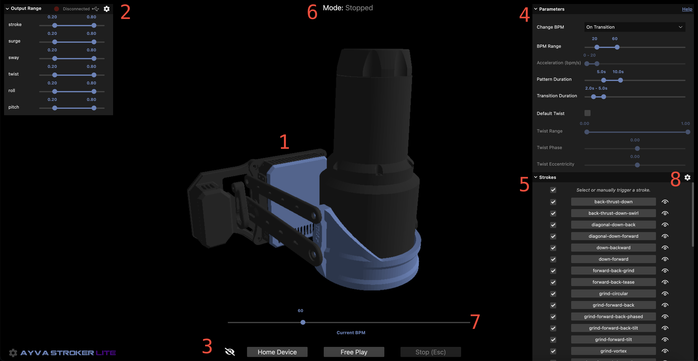
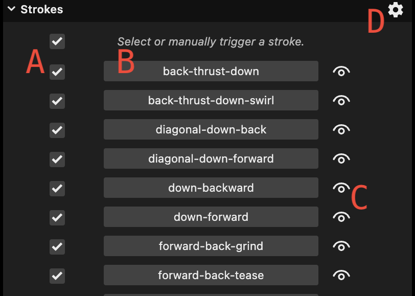

Ayva Stroker Lite is a small web based random stroker app that uses the Web Serial API to connect to and control an OSR2 or SR6 device.
Features:
- Run any TempestStroke in Ayva's library.
- Change the speed (bpm) of the currently running stroke.
- Enter Free Play mode where strokes are randomly selected according to user preferences.
- Set the duration range for random strokes.
- Smooth transitions between strokes.
- Set the duration range for transitions.
- Set the bpm range (the speed of the next stroke is randomly selected).
- Enable twist movements.
- Choose what strokes to include in Free Play mode.
- Set device output limits.
- Connect to device via Web Serial API.
- Emulator to see 3D simulation of movements on screen (with or without hardware device connected).
Guide
1. Emulator
The emulator provides a 3D simulation of the movements of the device. The current version is of an OSR2+. It does not have a forward or left axis (as available on the SR6), however, movements on those axes are still supported by the application and will be sent to an actual device when connected. Strokes can be played on the emulator alone (a physical device does not have to be connected).
Controls:
- Click+Drag to rotate the camera.
- Mousewheel to zoom in and out.
- Shift+Click+Drag to pan.
2. Output Range and Device Connection
This section allows you to set the output range for all supported axes (linear and rotational). The details on how Ayva scales output can be found in the Configuration documentation under the Axis Limits section.
The button in the top right gives the device connection status. Clicking it will open the built-in Web Serial API window of the browser that allows you to select a device to connect to. For safety reasons, connections can only be made when in Stopped mode. You will not be able to connect to a device if a stroke is currently playing.
3. Controls
- Home Device: Stops the current behavior and moves the device to the home position.
- Free Play: Commands Ayva to start playing strokes randomly according to the current parameters.
- Stop (Esc): Immediately stops the current behavior and ceases to send any output to the device. Pressing the Escape key will also trigger this action.
4. Parameters

This section allows you to set the parameters that are used during free play mode (and some for manually triggered strokes). All parameters in this section only take effect on the next stroke played.
- BPM Range: The speed range of strokes in beats per minute. When a stroke is randomly selected, it will pick a random speed within this range.
- Pattern Duration: The duration range of strokes in seconds. When a stroke is randomly selected, it will last for a random amount of seconds within this range.
- Transition Duration: The duration range for smooth transitions in seconds. When a new stroke is starting, the transition into the new stroke will take a random amount of seconds within this range.
- Enable Twist: Currently, all patterns in the default library of strokes do not have any movement on the twist axis. This option allows you to add custom motion to the twist axis for all strokes.
- Twist Range: When twist is enabled, this allows you to specify the range of the twist motion.
- Twist Phase: When twist is enabled, this allows you to specify the phase of the twist motion.
- Twist Eccentricity: When twist is enabled, this allows you to specify the eccentricity of the twist motion.
The twist motion (like any other axis motion for TempestStrokes) is a cosine shaped movement. See the TempestStroke documentation for additional details on parameters such as phase and eccentricity.
5. Strokes

This section allows you to choose what strokes are included in free play mode, or to manually trigger a stroke. Manually triggering a stroke transitions out of free play mode. In manual mode, the current stroke will play continuously until another stroke is selected or free play mode is triggered. All transitions between free play and manual mode are smooth.
The top right will update to show the current stroke that is playing, as well as when a transition is occurring.
6. Mode
This label displays the current mode. It will be either Stopped, Free Play, or Manual.
7. Current BPM
This slider shows the current speed. In both Free Play and Manual mode the speed of the current stroke can be changed in real time. However, while you can set the speed in Free Play mode, Ayva can (and likely will) choose a new speed when it decides to play a new stroke. But Ayva will never changes strokes while you are dragging the slider. This means that if you are in Free Play mode and you would like to stay on the current pattern without leaving Free Play, you could keep the bpm slider engaged until you are ready to switch.
Manually updating the bpm is not allowed during a transition (the widget will be disabled), as Ayva has full control of the speed during that time.